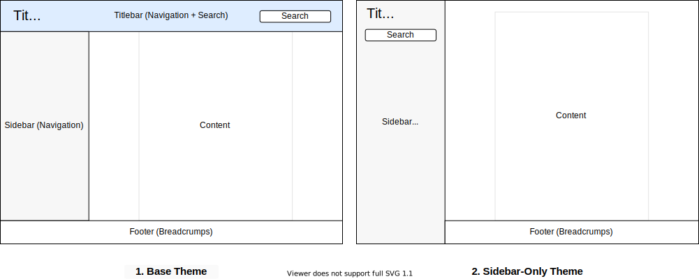

|
Doxygen Awesome CSS
v0.0.3
Modern Doxygen theme
|
|
Doxygen Awesome CSS
v0.0.3
Modern Doxygen theme
|

Doxygen Awesome CSS is a custom CSS for doxygen html-documentation with lots of customization parameters.
I really like how the doxygen html-documentation is structured! But IMHO it looks a bit outdated.
This theme is an attemt to update the visuals of doxygen without changing it's overall layout too much.
Copy the css files from this repository into your project or add this repository as submodule and check out the latest release:
Then make the option HTML_EXTRA_STYLESHEET in your Doxyfile point to the css files:
There is two variants of the theme.

The theme is highly customizable because lot of things are parameterized with CSS variables. The following list of parameters is not complete! You can easily modify all variables in with the developer tools of your browser to find out what they do.
To customize the existing theme, add your own custom.css and overwrite the variables there:
If you miss a configuration option or find a bug, please consider opening an issue!
| Parameter | Description | Default |
|---|---|---|
| Color Scheme | ||
--primary-color | Primary theme color | #1982d2 |
--primary-dark-color | Dark primary color for accents | #00559f |
--primary-light-color | Light primary color | #7aabd6 |
--primary-lighter-color | Extra light primary color. Used for memitem focus shadow | #cae1f1 |
--primary-lightest-color | Super light primary color. Used for memitem focus shadow | #e9f1f8 |
This theme is heavily inspired by the beautiful vuepress static site generator default theme!